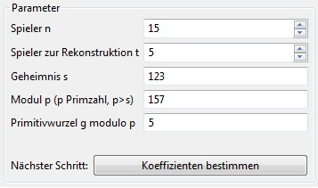

Shamir's Secret Sharing
Die Demonstration soll die Funktionsweise des Verifiable Secret Sharing Plug-ins zeigen.
Das Verifiable Secret Sharing Plug-in lässt sich über das Menü Visualisierungen oder über die View
Algorithmen im Tab Visualisierungen starten und in seiner Ansicht maximieren.
GRAFIK 1: Übersicht
Das Plug-in gliedert sich in zwei Bereiche: Den Header und den Bereich in dem Plug-In-Bereich.
Im Header ist eine kurze Beschreibung über das Plug-in angezeigt. Im eigentlichen Plug-In-Bereich können die
Parameter festgelegt werden und die Berechnungen für das Verifiable Secret Sharing durchgeführt werden.
Festlegung der Parameter für die Berechnung
Im Bereich Parameter werden die nötigen Parameter für den Ablauf des Algorithmus eingestellt.
Man wählt die Anzahl der Personen aus, an die die Shares verteilt werden und die Anzahl der Personen, die für die Rekonstruktion nötig sind.
Als nächstes wird das Geheimnis s festgelegt.
Nachdem das Geheimnis gewählt wurde, wird automatisch der Modul p berechnet, da dieser eine Primzahl sein muss.
Es kann jedoch auch selbst ein Modul gewählt werden. Auch in diesem Fall muss es wieder eine Primzahl sein.
Der letzte Parameter ist die Primitivwurzel g modulo p. Als Primitivwurzeln werden in der Zahlentheorie bestimmte
Elemente von primen Restklassengruppen bezeichnet. Die definierende Eigenschaft einer Primitivwurzel ist, dass jedes Element
der primen Restklassengruppe als Potenz der Primitivwurzel dargestellt werden kann. Hier wird von JCrypTool wieder ein Wert berechnet,
der optional aber auch wieder selbst gewählt werden kann. Da jedoch die Berechnung einer Primitvwurzel etwas komplexer ist, ist es ratsam den
zur Verfügung gestellten Wert zu verwenden.
GRAFIK 2: Parameter
Sind alle Parameter korrekt gewählt, ist es möglich mit einem Klick auf Koeffizienten bestimmen zum nächsten Schritt
fortzufahren.
Festlegung der Koeffizienten für das Polynom
Im Fenster Koeffizienten werden die Koeffizienten für das Polynom festgelegt. Diese können entweder von JCrypTool generiert werden lassen,
oder wieder selbst gewählt werden. Die Koeffizienten müssen dabei natürliche Zahlen sein und kleiner als der Modul p.
GRAFIK 3: Koeffizienten
Dabei wird der ungültige Wert in der Farbe rot dargestellt. Es gibt nun die Möglichkeit sich eine
Primzahl, ausgehend von der Zahl die eingegeben wurde, generieren zulassen oder der Benutzer kann eine eigene Zahl
eingeben. Falls man sich eine Zahl durch das Programm generieren läßt, wird der Button Verify input deaktiviert, da
der vorgeschlagene Wert gültig und die Verifikation nicht nötig ist. Es können nun weitere Zahlen durch Drücken des
Generate next prime Buttons berechnet werden. Falls der Benutzer eine Eingabe tätigt, wird die Zahl zuerst in der Farbe schwarz
dargestellt. Der Benutzer muss nun die eingegebene Zahl durch das Programm verifizieren lassen. Dabei Drückt er den
Verify input Button. Falls es sich um eine Primzahl handelt, wird die Zahl in grün dargestellt und der Ok Button aktiviert,
andernfalls wird die Zahl rot gefärbt und der Benutzer muss entweder eine andere Zahl eingeben oder sich vom
Programm eine gültige Primzahl generieren lassen. Sobald eine gültige Primzahl eingegeben wurde, kann der Benutzer
den Dialog mit dem Ok Button verlassen.
Nun kann es sein, dass das Geheimnis s entweder schon vor dem Verifikationsdialog kleiner als das Modul p war oder
währendessen durch die Eingabe des Benutzers kleiner als das Modul geworden ist. Für diesen Fall öffnet sich ein weiterer
Dialog, um die Bedingung, dass das Geheimnis s echt kleiner als das Modul p sein muss, zuerfüllen. Der Benutzer
kann nun das Geheimnis s ändern, in dem er eine kleiner Zahl als das Modul p eingibt. Zur besseren Übersicht wird der
Modul oben angezeigt. Die Eingabe des Benutzers muss verifiziert werden, dazu wird der check input Button gedrückt.
Wenn der Wert für das Geheimnis s kleiner als das Modul p ist, wird der Wert in grün dargestellt, andernfalls in der
Farbe rot. Falls es sich um einen gültigen Wert handelt, wird der Ok Button aktiviert und der Benutzer kann den Dialog
mit dem Ok Button verlassen.

Nun kann man mit Betätigen des Buttons compute shares die Shares berechnen, die an die Personen verteilt werden.

Der Grafik-Modus
Die berechneten Shares werden in dem Bereich Shares angezeigt.

Auf der linken Seite wird der dazugehörige Graph des Polynoms im Graph Bereich dargestellt. Die einzelnen Shares werden
im Graphen als Punkte in der Farbe magenta angezeigt.

In dem Shares Bereich kann man die
Shares, die man für die Rekonstruktion verwenden will per Checkbox auswählen. Dabei werden die augewählten Shares
zur besseren Übersicht im Graphen in einer anderen Farbe dargestellt. Es müssen mindestens zwei Shares ausgewählt
werden, damit der Button Reconstruct aktiviert wird. Um alle Shares aus- oder abzuwählen, kann man auch die Buttons
Select all oder Deselect all benutzen.
Nach dieser Auswahl wird durch den Button Reconstruct die Berechnung der Rekonstruktion des Polynoms durchgeführt.
Im Bereich Reconstruction werden die Zwischenergebnisse der Berechnung angezeigt.

Im unteren Teil des Graph Bereichs wird das rekonstruierte Polynom angezeigt. Dabei wird das Ergebnis in der Farbe grün
angezeigt, falls das Polynom vollständig rekonstruiert wurde und die Farbe rot gewählt, falls nicht genug Punkte für die
Rekonstruktion ausgewählt wurden.

Für den Fall, dass das Polynom nicht richtig rekonstruiert wurde, werden beide Polynome als Graph in unterschiedlichen Farben
dargestellt.

Man kann jeder Zeit mit dem Mauszeiger über die Punkte fahren, um sich die den aktuellen Share anzeigen zulassen. Dabei wir der
Share eingeblendet, wenn der Mauszeiger sich über den Punkt im Graphen befindet und ausgeblendet falls nicht.

Der Numerik-Modus
Der Numerik-Modus eignet sich für große Zahlen. Dabei ist der Bereich Select Parameter identisch mit dem Graphik-
Modus und wurde bereits oben beschrieben. Auf der rechten Seite unten befindet sich der Info Bereich, in
dem die Berechnungsvorschrift und das jeweilige Endergebnis nach der Berechnung angezeigt wird.

Die linke Seite wird in zwei Bereiche unterteilt, den Shares Bereich und den Reconstruction Bereich. In dem Shares
Bereich werden die berechneten Shares angezeigt. Der Bereich ist für große Werte gut geeignet.

Auch
hier kann man per Checkbox die jeweiligen Shares für die Rekonstruktion auswählen. Um alle aus- bzw abzuwählen kann
man die Buttons Select all bzw Deselect all benutzen. Wiederum muss man mindestens zwei Shares auswählen, damit
man den Reconstruct Button betätigen kann.
Danach werden die Zwischenergebnisse in dem Bereich Reconstruction angezeigt. Das rekonstruierte Polynom wird
darunter in der Farbe grün, falls die Rekonstruktion erfolgreich war und in der Farbe rot, falls zu wenige Shares
auswählt wurden, angezeigt.

Desweiteren wird zusätzlich im Info Bereich eine Information zum Endergebnis ausgegeben.